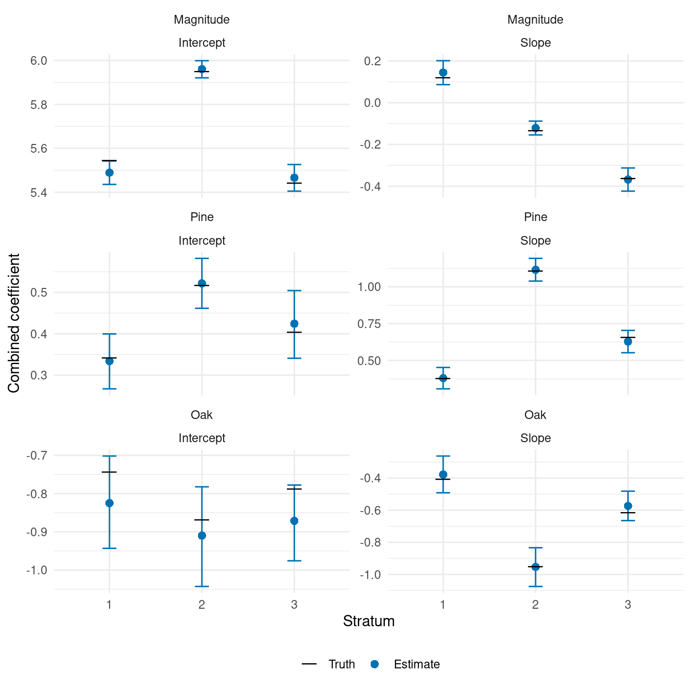
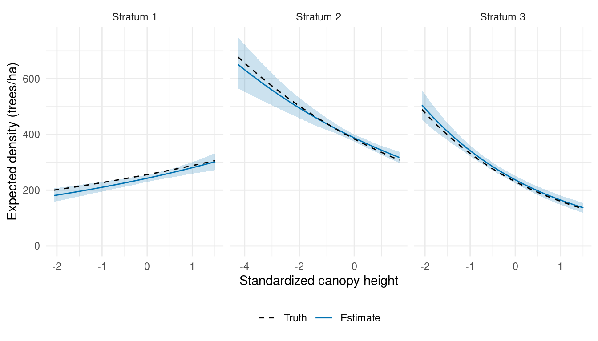
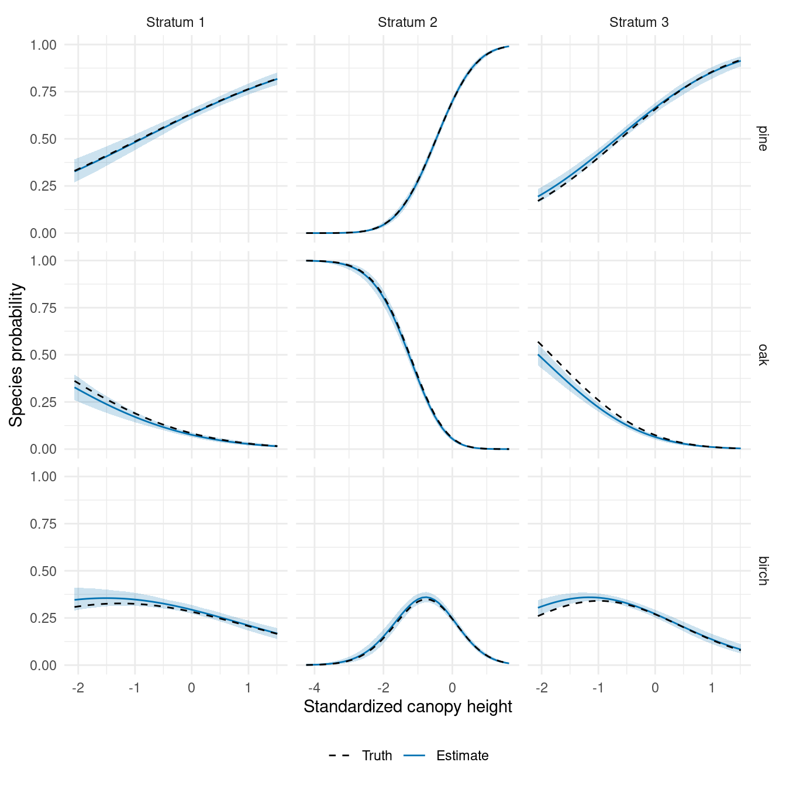
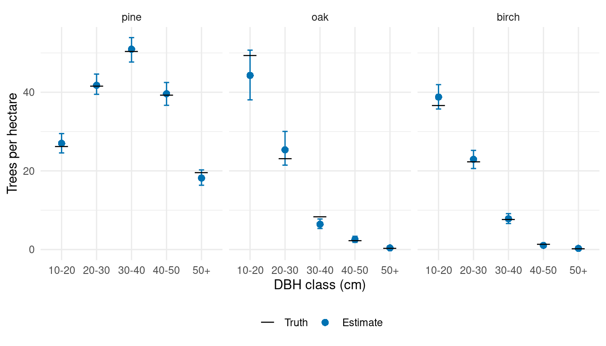

Canopy-height relationships that vary among strata
Source:vignettes/articles/stratum-slopes-plot-sampling.qmd
The relationship between canopy height and tree density can differ among forest types or management histories. The same increase in canopy height may also correspond to different changes in species composition. We extend the stratum-intercept example to let both intercepts and canopy-height slopes vary among strata, in magnitude and species allocation.
We generate a new population, fit the model, and compare the combined coefficients and resulting relationships with truth. We then use the familiar prediction and aggregation steps to estimate forest species-by-DBH densities. The DBH allocation regressions remain shared across strata.
Example data
Download the stratum-example inputs (ZIP)
These are the same prepared locations and polygons used in the stratum-intercept article. Extract the archive and use the folder containing data/ as your R working directory. The code below generates a new population in memory.
Read the prepared locations
We use the same three groups of stands and standardized canopy-height predictor x as in the stratum-intercept article. The prepared table includes both sampled plots and prediction units, identified by dataset. Units crossing stratum boundaries have already been divided into portions, each with its own area, plot_id, and stratum_id. The previous article maps these strata and explains the preparation.
Add stratum-specific slopes
Magnitude
For unit in stratum , expected density and total count follow
where is the unit’s area in hectares and is negative-binomial size. The stratum deviations have independent Normal distributions
The combined intercept gives log expected density at average plot canopy height. The combined slope describes how that log density changes with x. A one-standard-deviation increase in canopy height multiplies expected density by . A positive slope increases expected density; a negative slope decreases it.
Species allocation
Species allocation again proceeds through pine, then oak, with birch receiving the remaining trees. For allocation step , we use
where and are independent standard Normal scores. Each stratum has an intercept score and a slope score, each shared by the pine and oak allocation steps. Their species-specific loadings determine the size and direction of each contribution. Pine anchors both terms, so its intercept and slope loadings are constrained to be positive. The combined slopes can still have either sign.
The two terms have separate scores and loadings. As in the magnitude model, we model intercept and slope deviations independently; this specification does not estimate an intercept–slope covariance. A slope changes the probit allocation relationship, not the species probability by a constant amount. For oak, allocation remains conditional on a tree not being pine.
Generate a population
We keep and , and use magnitude standard deviations of 0.5 for intercepts and 0.2 for slopes. Species regression coefficients match the preceding articles. We use loadings of 0.7 and for the species intercept term and 0.4 and for the slope term. Size is fixed at 1,000 because magnitude contains random effects.
We draw the four sets of effects once per stratum and use them at all observed and prediction units in that stratum. The true_coefficients table records the resulting combined intercepts and slopes for comparison after fitting.
beta_0 <- log(350)
beta_1 <- -0.2
sigma_delta_0 <- 0.5
sigma_delta_1 <- 0.2
size <- 1000
alpha_pine <- c(intercept = 0, slope = 0.5)
alpha_oak <- c(intercept = -0.5, slope = -0.5)
gamma_pine <- c(intercept = 0.7, slope = 0.4)
gamma_oak <- c(intercept = -0.5, slope = -0.3)
set.seed(1)
stratum_effects <- tibble(
stratum_id = 1:3,
delta_0 = rnorm(3, sd = sigma_delta_0),
delta_1 = rnorm(3, sd = sigma_delta_1),
u_0 = rnorm(3),
u_1 = rnorm(3)
)
true_coefficients <- stratum_effects |>
transmute(
stratum_id,
Magnitude_intercept = beta_0 + delta_0,
Magnitude_slope = beta_1 + delta_1,
Pine_intercept = alpha_pine[1] + gamma_pine[1] * u_0,
Pine_slope = alpha_pine[2] + gamma_pine[2] * u_1,
Oak_intercept = alpha_oak[1] + gamma_oak[1] * u_0,
Oak_slope = alpha_oak[2] + gamma_oak[2] * u_1
) |>
pivot_longer(-stratum_id, names_to = c("component", "coefficient"),
names_sep = "_", values_to = "truth") |>
mutate(coefficient = recode(coefficient, intercept = "(Intercept)", slope = "x"))
locations <- locations |>
left_join(stratum_effects, by = "stratum_id")The random deviations have mean zero in their generating distributions; the three realized deviations need not average to zero. We use their sums with the regression coefficients to generate total counts and species allocations.
species <- c("pine", "oak", "birch")
pi_pine <- pnorm(alpha_pine[1] + gamma_pine[1] * locations$u_0 +
(alpha_pine[2] + gamma_pine[2] * locations$u_1) * locations$x)
pi_oak <- pnorm(alpha_oak[1] + gamma_oak[1] * locations$u_0 +
(alpha_oak[2] + gamma_oak[2] * locations$u_1) * locations$x)
species_counts <- tibble(
pine = rbinom(nrow(locations), locations$count, pi_pine)
)
species_counts$oak <- rbinom(
nrow(locations), locations$count - species_counts$pine, pi_oak
)
species_counts$birch <- locations$count - rowSums(species_counts)We finish with the same within-species DBH regressions as in the earlier articles. These have no random effects or smoothing across classes.
Allocate each species count among DBH classes
dbh_classes <- c("10-20", "20-30", "30-40", "40-50", "50+")
alpha_dbh <- tibble(
species = rep(species, each = 4),
dbh_class = rep(dbh_classes[1:4], times = 3),
intercept = c(-1, -0.5, 0, 0.5,
-0.5, 0, 0.5, 1,
0, 0.5, 1, 1.5),
slope = c(-0.4, -0.3, -0.2, -0.1,
-0.3, -0.3, -0.2, -0.2,
-0.2, -0.2, -0.1, -0.1)
)
categories <- expand_grid(species = species, dbh_class = dbh_classes) |>
mutate(category = paste(species, dbh_class, sep = ":"))
counts <- matrix(0L, nrow = nrow(locations), ncol = nrow(categories),
dimnames = list(NULL, categories$category))
for (s in species) {
coefficients <- alpha_dbh |> filter(species == s)
remaining <- species_counts[[s]]
for (b in 1:4) {
probability <- pnorm(coefficients$intercept[b] +
coefficients$slope[b] * locations$x)
category <- paste(s, dbh_classes[b], sep = ":")
counts[, category] <- rbinom(nrow(locations), remaining, probability)
remaining <- remaining - counts[, category]
}
counts[, paste(s, "50+", sep = ":")] <- remaining
}
locations <- bind_cols(locations, as_tibble(counts))We separate the sampled units used for fitting from the prediction units used for forest estimation.
Fit the model
We arrange the counts into one row per unit, species, and DBH class.
library(magComp)
species_order <- c("pine", "oak", "birch")
trees <- plots |>
select(plot_id, stratum_id, area, x, contains(":")) |>
pivot_longer(contains(":"), names_to = c("species", "dbh_class"),
names_sep = ":", values_to = "count") |>
mutate(
species = factor(species, levels = species_order),
dbh_class = ordered(dbh_class, levels = dbh_classes)
) |>
arrange(plot_id, species, dbh_class)
dat <- magCompData(
trees,
unit = plot_id, categories = c(species, dbh_class),
tree_count = count, design = fixedArea(area)
)The new formula terms are x:iid(...) for magnitude and x:factor_iid(...) for species allocation. The x: prefix multiplies the term’s contribution by canopy height, making it a varying slope. Including x separately supplies the fixed slope. Distinct term names identify the intercept and slope parameters in the fitted object.
fit <- magComp(
dat,
magnitude = ~ x + iid(stratum_id, name = "stratum_intercept") +
x:iid(stratum_id, name = "stratum_slope"),
composition = magCompComposition(
species ~ x +
factor_iid(stratum_id, K = 1, anchors = "pine", name = "stratum_intercept") +
x:factor_iid(stratum_id, K = 1, anchors = "pine", name = "stratum_slope"),
dbh_class | species ~ x
),
control = magCompControl(
n_samples = 4000,
n_burn = 1000,
n_chains = 3,
n_cores = 3,
chain_seeds = 1:3,
nb_size = 1000,
verbose = FALSE
)
)Each chain contributes 3,000 retained draws. We use automatic starting values and default priors. The model estimates a separate magnitude variance for each term and separate species loadings for the intercept and slope factors. Only three strata inform these between-stratum distributions, so we focus on the combined coefficients and their relationships.
Inspect the combined intercepts and slopes
We first inspect the fixed regression coefficients from summary(fit). The complete summary also includes the magnitude variances, species loadings, and DBH coefficients.
parameter_summary <- summary(fit)
parameter_summary |>
filter(parameter == "coefficients",
component == "magnitude" | block == "species") |>
select(symbol, mean, q2_5, q97_5, rhat, ess) |>
knitr::kable(digits = 3,
col.names = c("Parameter", "Mean", "2.5%", "97.5%", "R-hat", "ESS"))| Parameter | Mean | 2.5% | 97.5% | R-hat | ESS |
|---|---|---|---|---|---|
| beta[0] | 5.400 | 5.081 | 5.751 | 1.211 | 17.075 |
| beta[x] | -0.091 | -0.357 | 0.280 | 1.244 | 14.806 |
| alpha[0,pine] | 0.389 | -0.072 | 0.744 | 1.085 | 36.736 |
| alpha[x,pine] | 0.536 | -0.731 | 1.024 | 1.236 | 16.924 |
| alpha[0,oak] | -0.852 | -1.060 | -0.618 | 1.006 | 91.887 |
| alpha[x,oak] | -0.508 | -0.895 | 0.472 | 1.232 | 17.952 |
Several fixed coefficients mix slowly, with R-hats up to about 1.24. As in the intercept-only extension, a fixed coefficient and its random deviations can trade off while leaving their sums nearly unchanged. This applies to slopes as well as intercepts. The data inform a stratum’s combined slope more directly than its fixed and random parts separately.
We obtain the combined coefficients for each stratum with the same summary() interface. For magnitude, it adds the corresponding random coefficient. For species, it adds the matching loading-times-score contribution. These operations happen within each retained draw and chain.
combined_summary <- summary(fit, type = "combined", group = "stratum_id") |>
mutate(
component = if_else(component == "magnitude", "Magnitude", str_to_title(stick)),
stratum_id = as.integer(group)
) |>
left_join(true_coefficients, by = c("component", "coefficient", "stratum_id")) |>
mutate(
component = factor(component, levels = c("Magnitude", "Pine", "Oak")),
coefficient = factor(coefficient, levels = c("(Intercept)", "x"),
labels = c("Intercept", "Slope"))
)
combined_summary |>
group_by(component, coefficient) |>
summarise(max_rhat = max(rhat), min_ess = min(ess), .groups = "drop") |>
knitr::kable(digits = 3,
col.names = c("Component", "Coefficient", "Largest R-hat", "Smallest ESS"))| Component | Coefficient | Largest R-hat | Smallest ESS |
|---|---|---|---|
| Magnitude | Intercept | 1.005 | 626.055 |
| Magnitude | Slope | 1.007 | 645.563 |
| Pine | Intercept | 1.001 | 1639.463 |
| Pine | Slope | 1.003 | 909.420 |
| Oak | Intercept | 1.003 | 329.727 |
| Oak | Slope | 1.002 | 382.527 |
The table summarizes diagnostics across the three strata for each coefficient. All combined coefficients have R-hats below 1.01, with effective sample sizes above 300. These diagnostics apply to the sums, not their separate fixed effects, random effects, or loadings.
We compare the combined coefficients with truth. Magnitude coefficients are on the log-density scale; species coefficients are on the probit scale.
ggplot(combined_summary, aes(factor(stratum_id), mean)) +
geom_errorbar(aes(ymin = q2_5, ymax = q97_5), width = 0.15, color = "#0072B2") +
geom_point(aes(shape = "Estimate"), color = "#0072B2", size = 2.5) +
geom_point(aes(y = truth, shape = "Truth"), size = 6) +
scale_shape_manual(values = c("Truth" = 95, "Estimate" = 16),
breaks = c("Truth", "Estimate"), name = NULL) +
facet_wrap(vars(component, coefficient), ncol = 2, scales = "free_y") +
labs(x = "Stratum", y = "Combined coefficient") +
theme_minimal() +
theme(legend.position = "bottom")
The magnitude slope is positive in stratum 1 and negative in strata 2 and 3. Pine allocation increases with canopy height in all three strata, most strongly in stratum 2. Oak’s conditional allocation slopes are negative. We next translate these coefficients into density and species-probability relationships, including uncertainty.
Plot the canopy-height relationships
We construct 50 canopy-height values within each stratum’s observed range. Here plot_id labels evaluation points along these relationships. They do not represent the forest prediction grid.
relationship_data <- plots |>
group_by(stratum_id) |>
summarise(x = list(seq(min(x), max(x), length.out = 50)), .groups = "drop") |>
unnest(x) |>
mutate(plot_id = row_number())
relationship_draws <- predict(
fit,
relationship_data,
type = c("magnitude", "proportion"),
target = "expected",
n_draws = 100,
summary = "samples"
)The expected target shows uncertainty in the modeled relationships. It transforms each draw of the combined coefficients before calculating means and intervals. We use the observation target later for forest estimation, where predictive draws also include count and allocation variation.
Expected tree density
We calculate the true relationships using the generating stratum effects, then join the magnitude summaries to the evaluation points.
relationship_truth <- relationship_data |>
left_join(stratum_effects, by = "stratum_id") |>
mutate(
magnitude = exp(beta_0 + delta_0 + (beta_1 + delta_1) * x),
pi_pine = pnorm(alpha_pine[1] + gamma_pine[1] * u_0 +
(alpha_pine[2] + gamma_pine[2] * u_1) * x),
pi_oak = pnorm(alpha_oak[1] + gamma_oak[1] * u_0 +
(alpha_oak[2] + gamma_oak[2] * u_1) * x),
pine = pi_pine,
oak = (1 - pi_pine) * pi_oak,
birch = (1 - pi_pine) * (1 - pi_oak)
)
magnitude_relationships <- summary(relationship_draws) |>
filter(quantity == "magnitude") |>
mutate(plot_id = as.integer(unit)) |>
left_join(select(relationship_truth, plot_id, stratum_id, x, truth = magnitude),
by = "plot_id") |>
mutate(stratum = paste("Stratum", stratum_id))
ggplot(magnitude_relationships, aes(x, mean)) +
geom_ribbon(aes(ymin = q2_5, ymax = q97_5), fill = "#0072B2", alpha = 0.2) +
geom_line(aes(linetype = "Estimate"), color = "#0072B2") +
geom_line(aes(y = truth, linetype = "Truth")) +
scale_linetype_manual(values = c("Truth" = "dashed", "Estimate" = "solid"),
breaks = c("Truth", "Estimate"), name = NULL) +
facet_wrap(~ stratum, nrow = 1, scales = "free_x") +
scale_y_continuous(limits = c(0, NA)) +
labs(x = "Standardized canopy height", y = "Expected density (trees/ha)") +
theme_minimal() +
theme(legend.position = "bottom")
The varying slopes capture different directions and strengths of association. Although each relationship is linear on the log-density scale, exponentiation gives the curved relationships on the density scale shown here.
Species probabilities
The model returns probabilities for the 15 species-by-DBH categories. We sum the five DBH probabilities within each species in every draw, then summarize those species probabilities. Summing interval endpoints would not give intervals for these sums.
species_relationships <- list()
for (s in species_order) {
categories <- paste(s, dbh_classes, sep = ":")
# Sum DBH classes, keeping evaluation points, draws, and chains.
proportion_draws <- apply(
relationship_draws$proportion[, categories, , , drop = FALSE],
c(1, 3, 4), sum
)
# Summarize all draws and chains at each evaluation point.
species_relationships[[s]] <- tibble(
plot_id = as.integer(dimnames(proportion_draws)[[1]]),
species = s,
mean = apply(proportion_draws, 1, mean),
q2_5 = apply(proportion_draws, 1, quantile, probs = 0.025),
q97_5 = apply(proportion_draws, 1, quantile, probs = 0.975)
)
}
species_truth <- relationship_truth |>
select(plot_id, stratum_id, x, all_of(species_order)) |>
pivot_longer(all_of(species_order), names_to = "species", values_to = "truth")
species_relationships <- bind_rows(species_relationships) |>
left_join(species_truth, by = c("plot_id", "species")) |>
mutate(species = factor(species, levels = species_order),
stratum = paste("Stratum", stratum_id))
ggplot(species_relationships, aes(x, mean)) +
geom_ribbon(aes(ymin = q2_5, ymax = q97_5), fill = "#0072B2", alpha = 0.2) +
geom_line(aes(linetype = "Estimate"), color = "#0072B2") +
geom_line(aes(y = truth, linetype = "Truth")) +
scale_linetype_manual(values = c("Truth" = "dashed", "Estimate" = "solid"),
breaks = c("Truth", "Estimate"), name = NULL) +
facet_grid(species ~ stratum, scales = "free_x") +
scale_y_continuous(limits = c(0, 1)) +
labs(x = "Standardized canopy height", y = "Species probability") +
theme_minimal() +
theme(legend.position = "bottom")
Oak’s probability includes both its conditional allocation and the chance that a tree was not assigned to pine. Birch receives what remains, so its relationship can be curved even without a separate regression coefficient.
Estimate forest densities
We now predict counts and allocations over the actual forest prediction units. The stratum intercepts and slopes are included automatically. standSummary() weights the resulting densities by the represented areas, as in the preceding articles.
set.seed(1)
predictions <- predict(
fit,
prediction |> select(plot_id, stratum_id, x, area),
type = "density",
target = "observation",
n_draws = 100,
summary = "samples"
)
forest_predictions <- standSummary(
predictions,
data = prediction,
unit = plot_id,
represented_area = area,
summary = "samples"
)
forest_truth <- prediction |>
select(contains(":")) |>
pivot_longer(everything(), names_to = "category", values_to = "count") |>
group_by(category) |>
summarise(truth = sum(count) / sum(prediction$area), .groups = "drop")
forest_comparison <- summary(forest_predictions) |>
as_tibble() |>
left_join(forest_truth, by = "category") |>
separate_wider_delim(category, delim = ":", names = c("species", "dbh_class")) |>
mutate(species = factor(species, levels = species_order),
dbh_class = ordered(dbh_class, levels = dbh_classes))
ggplot(forest_comparison, aes(dbh_class, mean)) +
geom_errorbar(aes(ymin = q2_5, ymax = q97_5), width = 0.15, color = "#0072B2") +
geom_point(aes(shape = "Estimate"), color = "#0072B2", size = 2.5) +
geom_point(aes(y = truth, shape = "Truth"), size = 6) +
scale_shape_manual(values = c("Truth" = 95, "Estimate" = 16),
breaks = c("Truth", "Estimate"), name = NULL) +
facet_wrap(~ species, nrow = 1) +
scale_y_continuous(limits = c(0, NA)) +
labs(x = "DBH class (cm)", y = "Trees per hectare") +
theme_minimal() +
theme(legend.position = "bottom")
Forest estimates combine the stratum-specific relationships with the canopy heights and areas across the forest. The same predictive draws can be summarized by stratum or stand using the area tables and calls shown in the stratum-intercept article.
The same x: construction applies to spatial random effects. Use x:nngp(...) for magnitude and x:factor_nngp(...) for species allocation, with coordinates and neighbors specified as in the spatial-effects article. The canopy-height slopes then vary continuously across the forest rather than being shared within strata. Combined-coefficient summaries, prediction, and area aggregation follow the same approach.
Random effects in DBH allocation within species are developed separately in the conditional DBH-effects article.